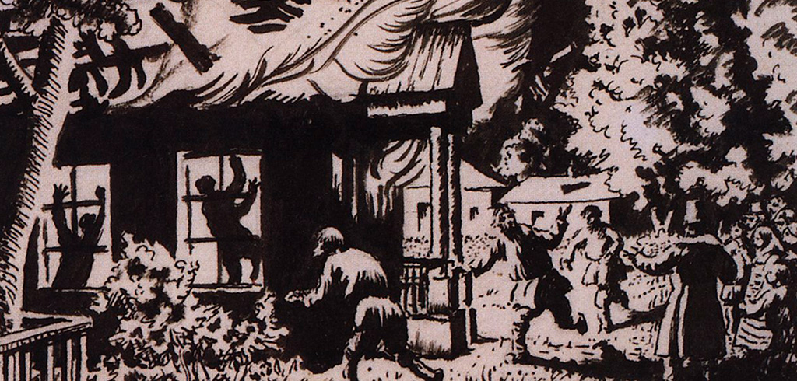
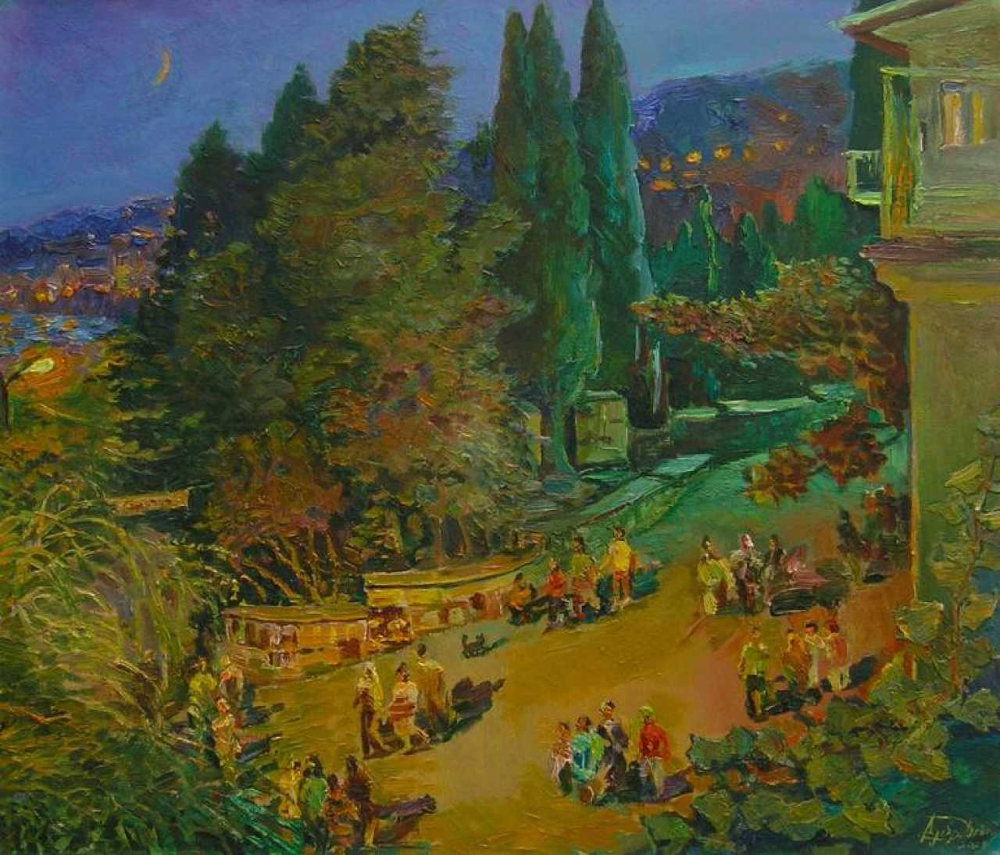

«Дубровский» – неоконченный роман великого русского поэта, драматурга, прозаика, создателя современного русского литературного языка Александра Сергеевича Пушкина (1799-1837). Пушкин работал над этим произведением с 1832 по 1833 год. Однако оставил свой замысел незавершенным и стилистически необработанным.

«Дубро́вский» — наиболее известный разбойничий роман на русском языке, необработанное для печати произведение А. С. Пушкина. Повествует о любви Владимира Дубровского к Марии Троекуровой — потомков двух враждующих помещичьих семейств.